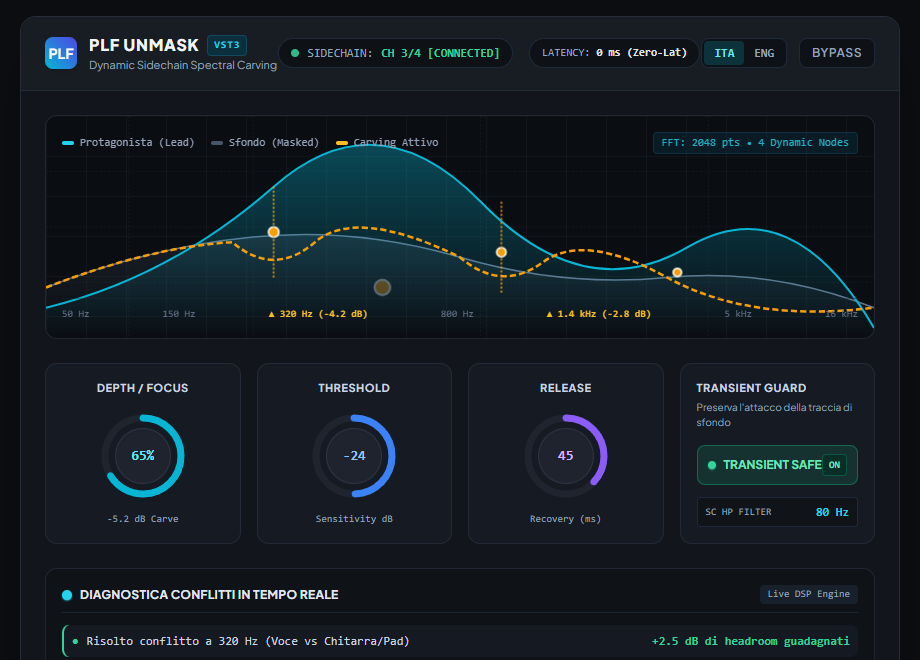

Plugin di sidechain spectral unmasking progettato per risolvere dinamicamente e chirurgicamente i conflitti di frequenza tra la traccia protagonista (es. Voce Lead, Kick, Snare) e la traccia di sfondo (es. Pad, Chitarre, Synth), a zero latenza e preservando totalmente l'attacco dei transienti grazie al modulo Transient Safe.

Ingegneria di precisione acustica per eliminare le sovrapposizioni frequenziali senza comprimere l'intera traccia e senza svuotare il mix.
4 filtri biquad IIR parametrici dinamici che operano su zone critiche: Low-Mid mud (~280 Hz), corpo armonico (~720 Hz), formante e intelligibilità vocale (~2.2 kHz) e presenza (~4.8 kHz).
Riconosce la salita dinamica ultrarapida dei transienti sulla traccia di sfondo (es. percussioni, plettrate di chitarra o tasti di piano) e inibisce il ducking durante l'attacco, lasciando il punch intatto.
Un pannello diagnostico che calcola in tempo reale i dB di headroom guadagnati, le frequenze chirurgicamente liberate e la percentuale stimata di chiarezza vocale recuperata.
Sviluppato in C++ con JUCE e biquad Direct Form II Transposed: elaborazione in-place senza latenza di buffer o sfasamenti, ideale anche per il tracking dal vivo e mix complessi.